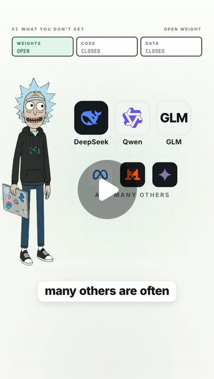

Instagram Reel

Most "open source" AI isn't open source. It's open weight — and the...
video transcript (enriched by ClaudeClaw)
Summary
[CAPTION]
Most "open source" AI isn't open source. It's open weight — and the difference is bigger than it sounds.
[CAPTION]
Most "open source" AI isn't open source. It's open weight — and the difference is bigger than it sounds.
Open weight means you get the finished model: the weights, the config, the tokenizer, a licence. You can download it, run it on your own GPUs, fine-tune it, quantise it, deploy it privately. That's real freedom.
What you usually don't get: the training data. The training code. The pre-processing. The logs of the run.
So you have the product. Not the recipe.
That's why DeepSeek, Qwen, GLM and most of the models you've heard called open source are better described as open weight.
Licences aren't the same either. Qwen3 and Mistral ship under Apache-2.0 — commercial use, modify, redistribute. Llama 3.3 comes with a community licence that caps you at 700M monthly users and makes you display "Built with Llama". Weights available ≠ do whatever you want.
Open source goes further: weights, source code, training and inference code, architecture, and enough about the data and the process that someone with enough compute could rebuild it. Enough compute might mean millions of dollars — but the recipe is there. That's the key distinction.
There's still no perfect agreement on where the line sits. The Open Source Initiative has tried to draw it with the Open Source AI Definition 1.0.
So next time a company says "our model is open source", don't just look for a download button. Ask:
Are the weights public?
Is the code public?
What does the licence allow?
Do we know how it was trained?
Is the training data available?
Open weight gives you the brain.
Open source tries to give you the blueprint too.
Which side is the model you use actually on?
#opensourceai #openweights #llm #aiexplained #machinelearning
[VIDEO]
Open weight versus open source AI. A lot of AI models, people call open source, aren't actually open source. They're open weight. And that difference matters. Let's start with open weight. When a model is open weight, you get access to the train parameters of the model. Those weights are basically the numbers the model learned during training. So instead of calling an API, you can download the model and run inference yourself. If you have enough hardware, you can run it on your own GPUs, you can fine-tune it, quantize it, deploy it privately, maybe even modify how it behaves. That gives you a lot of freedom. But here's what you usually don't get the full training data set, the complete training pipeline, all the preprocessing code, or everything required to recreate the model from scratch. So you have the finished product, but not necessarily the full recipe. That's why models like Deep Seek, Kuen, GLM, and many others are often better described as open weight models. And licenses matter too. Two models can both publish their weights, but one license might let you use them commercially with very few restrictions, while another might impose limits on certain use cases or redistribution, so weights available does not automatically mean do whatever you want. Now open source goes further. For a model to be meaningfully open source, the idea is that the important pieces needed to study, modify, and reproduce the system are public. That can include the model weights, the source code, training and inference code, architecture details, and ideally enough information about the training data and process to understand how the model was produced. In the strongest version, someone with enough compute could theoretically reproduce the model from scratch. Of course, enough compute might mean millions of dollars, but technically the recipe is there, and that's the key distinction. Open weight says, here is the trained model, you can run it. Open source says, here is the model, and here is how the system was built. Now there's one important nuance. There isn't perfect agreement across the entire AI industry about exactly what should qualify as open source for AI. Organizations like the Open Source Initiative have tried to define stricter standards, especially around access to the information needed to study and modify the system. So when a company says, our model is open source, don't just look for a download button. Ask, are the weights public? Is the code public? What does the license allow? Do we know how it was trained? Is the training data or enough information about it available? Because today a huge number of models described casually as open source are really open weight models with varying levels of openness around everything else. So the easiest way to remember it is open weight gives you the brain. Open source tries to give you the blueprint too.
View original on Instagram Reel →